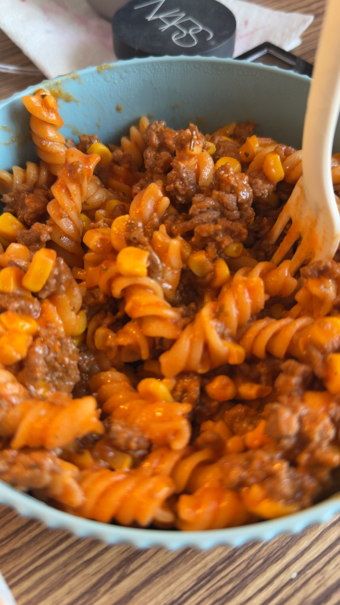

Meat Pasta

Ingredients
- 1lbs of ground beef
- 1/2 jar of meat sauce
- 1 box of Kraft mac and cheese
- 1 can of corn
- Onion powder
- Paprika powder
- Garlic Powder
- Salt
Instructions
- Boil a pot of water, salt to taste.
- Brown 1lb of ground beef in a another pot and season to desired taste.
- Once water is boiling, dump pasta noodles into pot and let boil for 8 minutes.
- At 3 minutes, add a can of corn to boiling pot of pasta.
- Drain pasta and corn.
- Add half a jar of meat sauce to the pot of ground beef.
- Add cheese powder packet to the meat sauce.
- Combine the two pots, mix throughly and enjoy!
This makes four servings!